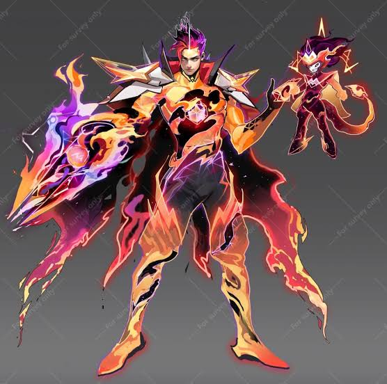

Excellent thief who comes and gies without a trace ” Claude grew up living in Los Pecados. The circumstances in his life forced him into becoming an incredible thief. But he was used by Kane and went to prison and chains. In prison, he met Merlin, the god of thieves, and inherited his mantle, successfully escaping from prison. After completing an agreement with Merlin, Claude returned to Los Pecados with his new partner Dexter, ready to take revenge on Kane. Lore Claude was born in Los Pecados, a western city in the Land of Dawn. An infamous city of sins without a ruler or order, lawless and ravaged by crime. Growing up in such a place as an orphan, Claude soon learned how to fight, lie, gamble and steal: tricks of the trade he had to rely upon to survive. He was especially talented in the latter, and no cutpurse he'd ever met matched him when it came to his sharp eye and nimble fingers. It wasn't long until he became leader of a vagrant band, relying upon his 'skills', and making a name for himself in Los Pecados. He found one who would offer him and his gang protection—Waldo Kane. Kane was yet to achieve the monopoly over Los Pecados that he'd dreamed of. Wild ambition and conspiracy brewed deep within him. To him, this motley crew of street roamers with no place to call home were the perfect tools to achieve his goals. Behind a mask of benevolence, he manipulated these kids, with smooth lies and false compassion leading them down a dark path. He molded them into becoming members of his criminal group, each misguided child referring to him as 'Father'. At the age of 18, Claude was given a monumental task: he was to head to Castle Grandrock in northern Moniyan, sneak into the Duke of Vance's home. Then, he would feign stealing secret accounts, while actually casting the blame on another gang. Kane promised Claude that he'd have people waiting for him once he was inside. Once he'd completed his mission Claude and his team would be rewarded with a place to live of their own. No longer would they need to live in the slums.
Fun Fact: Claude is a highly mobile Marksman in Mobile Legends: Bang Bang, known as the "Master Thief". He and his trusty pet monkey, Dexter, are fan favorites. Claude is unique because he fights as a duo, and his core strategy revolves around stealing enemy stats and utilizing battlefield trickery."